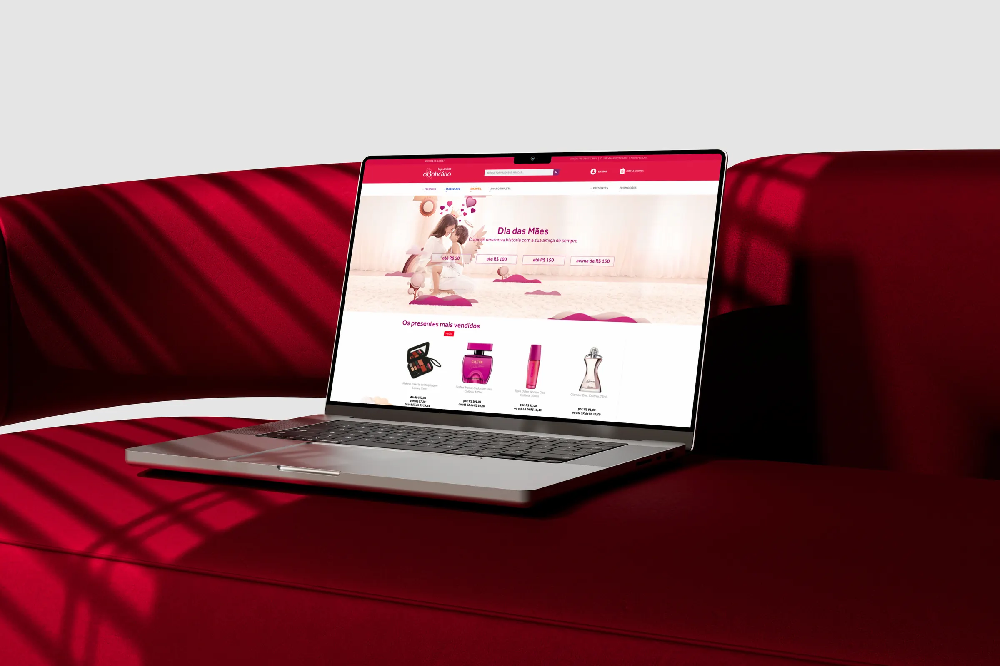
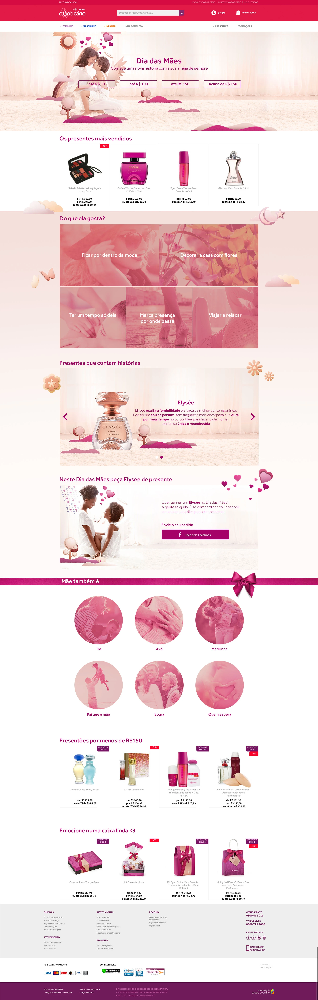

O Boticário: Redesigning the Mother's Day Gifting Experience
Replacing traditional filters with personality-driven discovery, making it easier for customers to explore, compare, and choose the right present.

Boticário Group is one of Brazil's leading beauty companies, behind well-known brands like O Boticário, Quem Disse, Berenice?, Eudora, and Vult.
The aim of the project was to redesign the gift discovery journey of Mother's Day within a two-week sprint by strategically rethinking the user experience, identifying core usability issues, uncovering behavioral insights, and defining a more intuitive and resonant path to purchase to increase conversions.
570,000 Visits
The campaign attracted over 570,000 visits, validating the redesigned experience's ability to drive qualified traffic and capture user interest at scale.
21% Conversion
A 21% conversion rate reflected the impact of a more intuitive information architecture and a gifting journey designed around users' decision-making process.
-34% Bounce Rate
A 34% reduction in bounce rate indicated that users found relevant content faster, engaged more deeply with the experience, and were more likely to continue exploring products.
How might we help customers find the right Mother's Day gift through a more intuitive and personalized discovery experience?
01
Generic, Product-First Experience
The Mother's Day page displayed a generic product grid with little visual hierarchy, focusing on products instead of helping customers find the right gift.
02
Limited Gift Discovery
Users had no dedicated gift search, meaningful filters, or guided recommendations to narrow down products based on recipient, preferences, or budget.
03
Missing Emotional Context
The experience lacked storytelling and emotional cues, failing to reflect the significance of Mother's Day and inspire confident gift decisions.
Working with the Lean UX framework, I focused on delivering quick, validating iterations, balancing user needs, business goals, and technical constraints within a limited timeframe.
To inform the redesign, quantitative and qualitative methods were combined to understand user behavior and business needs, combining heatmap analysis, analytics review, and stakeholder workshops to align strategic goals with customer expectations.
| Area | Activities |
|---|---|
| Research & Data Analysis | Heatmap analysis (Crazy Egg) and Google Analytics review to identify drop-offs and friction points across key journeys. |
| Stakeholder Alignments | Collaborative sessions with marketing, product, and brand teams to clarify goals, technical limitations, and success metrics. |
| User Personas & Empathy Mapping | Defined key user types and mapped their motivations, frustrations, and emotional triggers to inform the experience design. |
| Information Architecture & Wireframing | Designed and tested medium-fidelity wireframes and flow prototypes to validate ideas early with internal stakeholders. |

I defined personas from audience insights to align design decisions with real user behavior and business goals. Built from analytics, stakeholder insights, past campaign learnings, and shopping behaviors, they helped prioritize opportunities across the Mother's Day journey.
The Busy Partner
Practical Shopper
A partner who wants to find a gift quickly and without complications. Prioritizes convenience and clear, ready-to-recommend suggestions over browsing multiple options.
Challenges
- Wants to solve everything quickly
- Finds something nice and sticks with it
- Prefers ready-to-recommend suggestions
The Thoughtful Daughter
Emotional Shopper
A daughter who shops with her heart, searching for a gift that captures how much her mother means to her. Drawn to meaningful, story-driven presentations over generic options.
Challenges
- Buys with her heart
- Looks for meaningful gifts
- Enjoys storytelling like "for someone special" or "presents that move"
The Organized Brother
Planned Shopper
A brother who plans ahead and compares every option before buying, balancing price, timing, and personalization to get the most value out of his purchase.
Challenges
- Filters by price or brand
- Studies cost and considers discounts
- Looks for customization options
- Compares timing and shipping costs
Heatmap analysis and analytics data revealed recurring user behavior patterns, highlighting where users struggled and what was preventing campaigns from performing better.
-
Price is the primary decision driver
The heat concentration around the price-range filter reinforces that price is a key decision factor for most users, as it was their first move upon landing on the page.
Opportunity: Prioritize price-range filtering by repositioning it as a primary, immediately visible interaction point on the page. -
Users filter, not browse
High interaction on the sidebar filters combined with low engagement on the product grid suggests that users prefer filtering over browsing, indicating weak product presentation for a promotional campaign.
Opportunity: Redesign the product layout and introduce guided filter flows that match users' mental model of narrowing down by preference rather than passive browsing. -
No guided path for gift discovery
Users lacked other ways to find a product beyond generic filters, revealing a need for a more personalized and intuitive discovery experience, similar to in-store guidance.
Opportunity: Introduce a guided gift finder that mirrors the in-store experience by asking users about the recipient, budget, and preferences to surface relevant recommendations. -
The layout failed to retain users
Many users left the page quickly, showing that the layout failed to engage or guide them effectively upon arrival.
Opportunity: Redesign the page structure to immediately communicate relevance and guide users toward meaningful product discovery, reducing early exits.
Stakeholder alignments surfaced a simple in-store model, asking who the gift is for, the budget, and what she enjoys. This became the foundation for a more intuitive, emotionally resonant gifting journey rooted in relevance, ease, and connection.
| Solution | Opportunity | Journey Stage |
|---|---|---|
| Price Filtering Optimization | Reposition the most-used filter to a prominent, immediately visible location for easier budget-based decisions. | DISCOVERY |
| Persona-Based Navigation | Offer curated entry points based on recipient type, like "Mãe também é", instead of generic product categories. | DISCOVERY |
| Personalized Gift Discovery | Replicate an in-store consultation with a guided "What does she like?" flow, replacing the generic product grid. | ACTIVATION |
KPIs established to measure success
Guided Discovery Adoption
Help customers move from passive browsing to confident, guided gift decisions.
KPIs
Conversion Growth
Turn increased engagement into completed purchases during the campaign period.
KPIs
Reduced Friction
Lower early exits and create a more effective page experience for gift discovery.
KPIs
